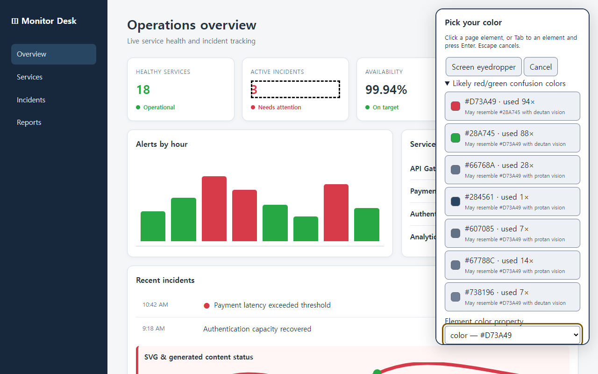
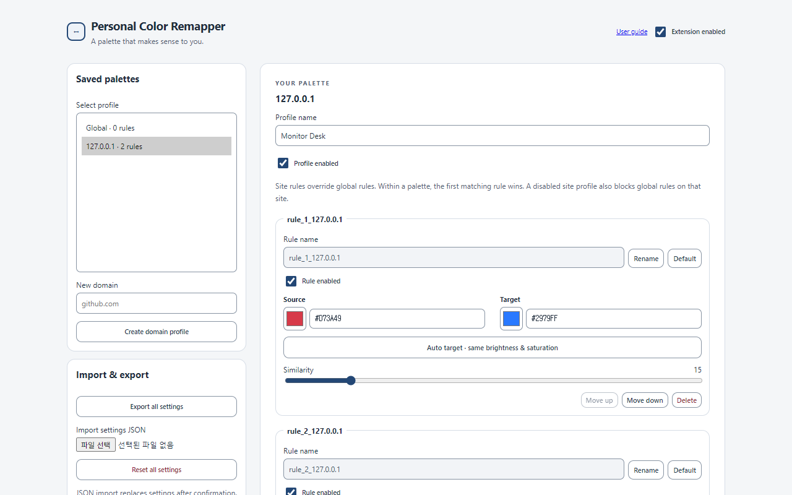

Pick it from the page
Click an element or use the screen eyedropper. The picker can also point out red and green colors that may be easy to confuse.
Pick a color on the page, choose one that works better for you, and decide how many nearby shades should change with it. You can set it up by looking at the page. No diagnosis or color theory required.
The extension is currently under Chrome Web Store review. Once approved, it will be available from the button above.

You choose what changes. The rest of the page keeps its original look.
Click an element or use the screen eyedropper. The picker can also point out red and green colors that may be easy to confuse.
Pick any target color, or ask for a suggestion with similar lightness and saturation. Move the Similarity slider to include nearby shades.
Keep one palette for GitHub and another for Grafana. The right colors come back automatically the next time you visit.
The extension checks the CSS and SVG colors already used on the page. It shows the HEX value, how often it appears, and another color it may resemble.
Source, Target, and Similarity stay together in one compact editor. Every change can be previewed immediately, and Cancel restores the saved colors.
Advanced Options uses the same simple controls for global and site-specific palettes. Reorder rules, duplicate profiles, and back everything up as JSON.

There is no account, analytics service, advertising, or external server. Your palettes and site names are saved in Chrome's local storage.
Read the privacy policyOpen the extension on a page, pick that color, and see the change before you save it.